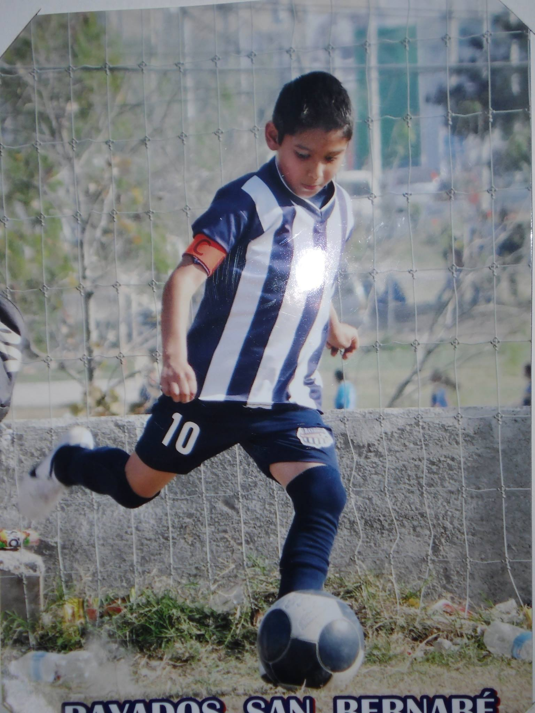
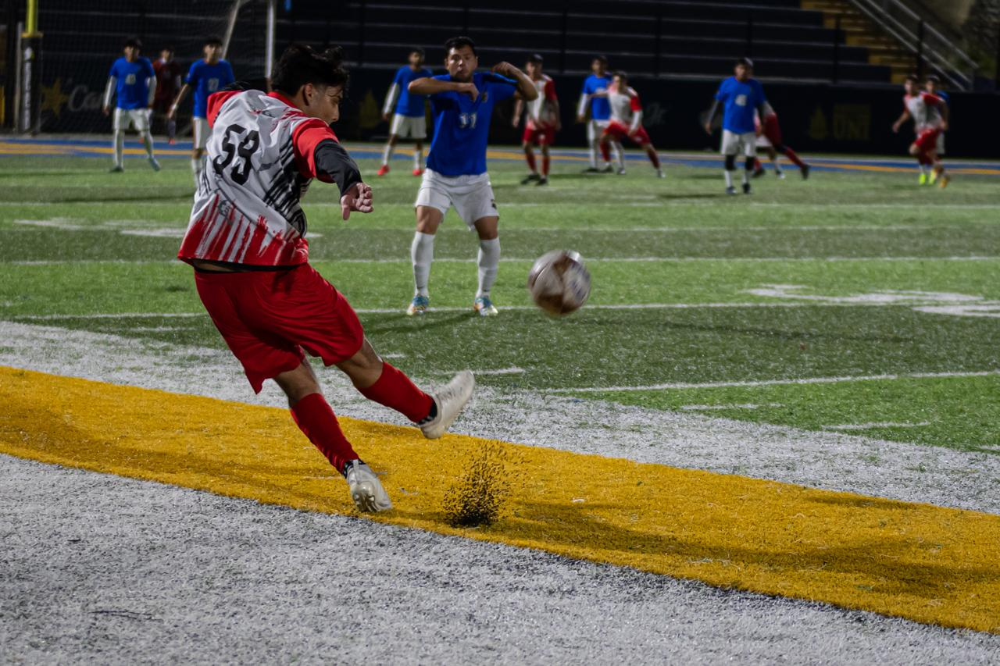
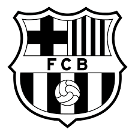
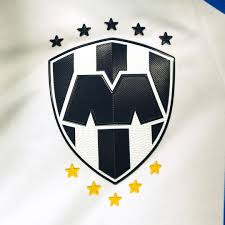
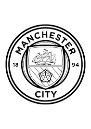

Pasatiempo Futbol
Bueno uno de mis pasatiempos favoritos diría yo mi favorito es jugar al Fútbol lo e practicado desde los 6 años de edad, al principio empezó como algo para hacer deporte solamente algo pasajero, pero termino siendo mi deporte favorito y termino siendo una actividad que me saca de un momento triste.
Actualmente ya solo lo juego por diversión, por pasar el rato pero hubo una época entre los 12 a 16 años donde si lo aspiraba a un futuro a dedicarme a esto de grande, pero después de pandemia en cuestión de deportes no volvió a ser lo mismo y decidí dejar ese "sueño" y estudiar algo en lo cuál hubiera futuro.
Equipos Favoritos
| Equipo | Escudo | Historia del club |
|---|---|---|
| Barcelona |  | Fundado en 1899, el Barcelona es uno de los clubes más importantes del mundo, conocido por su lema “Més que un club” y su estilo de juego “tiki-taka”, basado en la posesión y los pases cortos. Ha tenido grandes figuras como Cruyff, Ronaldinho, Xavi, Iniesta y Messi, y ha ganado múltiples títulos de la Liga Española, Copas del Rey y Champions League. |
| Monterrey |  | Fundado en 1945, Rayados es un equipo mexicano con uniforme a rayas azules y blancas, reconocido por su afición fiel y su poder económico. Ha ganado varios títulos de Liga MX y de la Liga de Campeones de la Concacaf, y mantiene una histórica rivalidad con los Tigres en el Clásico Regio. |
| Manchester City |  | Fundado en 1880 (con su nombre actual desde 1894), el Manchester City pasó décadas sin destacar, pero en los últimos años, con fuertes inversiones, se ha convertido en uno de los clubes más poderosos de la Premier League. Ha ganado múltiples títulos nacionales e internacionales y se destaca por un juego ofensivo y moderno, especialmente bajo el mando de Pep Guardiola. |